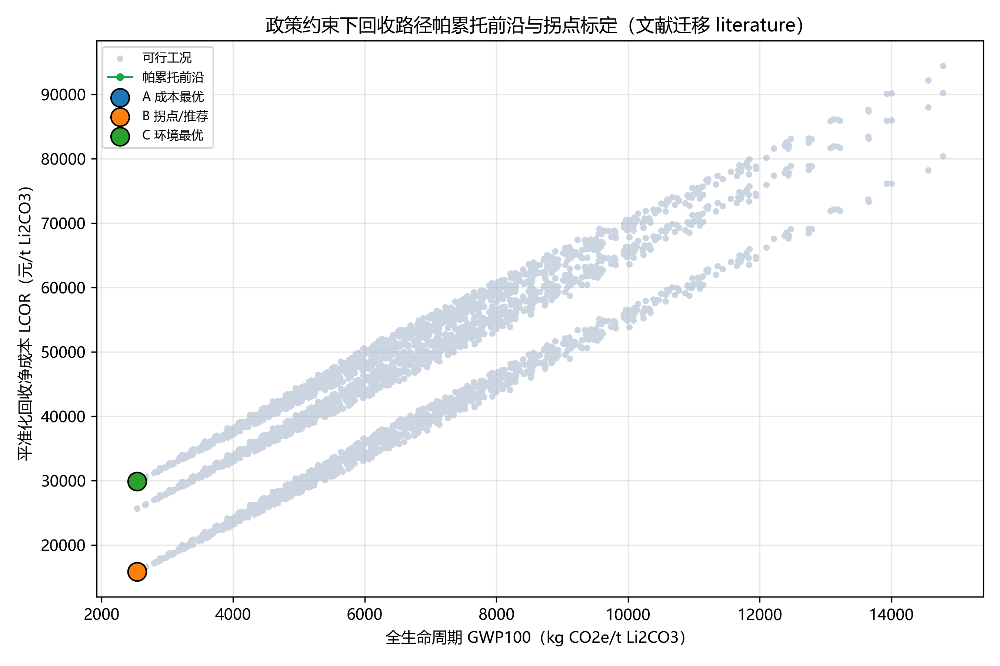
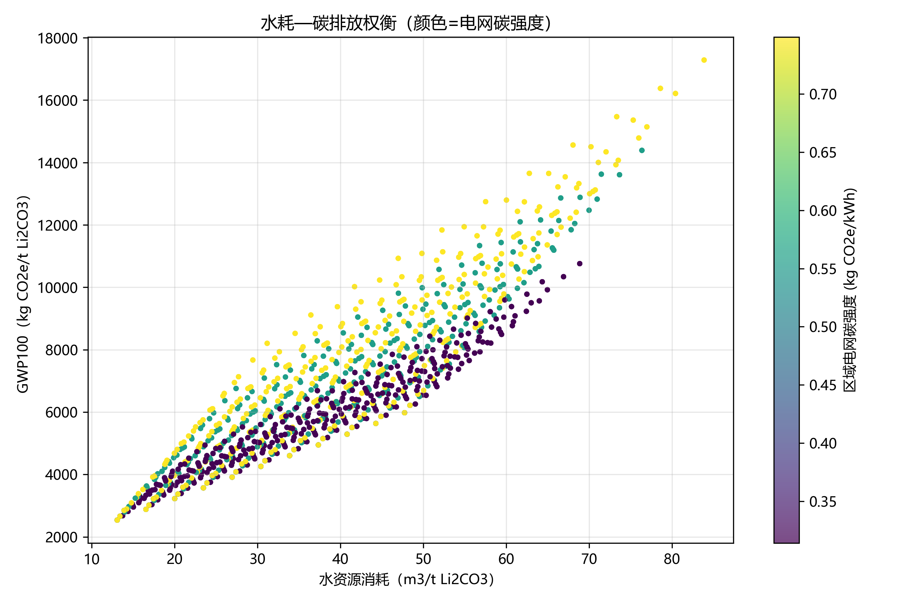

补齐成员 A 所缺分支级指标并用公开文献/工程报告数值标定来源、迁移假设，完成双情景（忠实文献值 / 混合口径）仿真与帕累托前沿。
成员 A 的分支级回收/捕集率（铜、铝、电极粉等）长期缺失，此前 B 侧以“规范阈值试填”方式跑通方法校验，存在“恰好达标⇒全 PASS”的同义反复风险。本轮以公开文献与工程报告补齐这些数值，并逐项标注来源与迁移假设。
核心发现：代表性文献给出的铜/铝回收率约 0.90、电极粉捕集率约 0.933，均低于 2024 规范 0.98 阈值[1][2]。因此按“忠实文献值”口径，湿法/混合路线在政策引擎中无可行解；按“混合口径”（Li/Ni/Co/Mn 用文献真值，cu/al/电极粉用 0.98 阈值代理）则可生成帕累托前沿。
本报告按用户要求同时输出两套情景并显式区分，结果等级分别为 literature_migration（混合口径可行）与 literature_infeasible（忠实值不可行），均与成员 A 实测、成员 C 正式 TEA 严格区分。
B 的功能单元为 1 t Li₂CO₃，只负责环境端（GWP100、水耗、电/热/试剂活动量）；政策与经济口径分别经成员 C 的 policy_engine 与 tea_model 判定，B 不复制、不伪造 C 的价格/数量。
literature，不得与 A 实测或 C 正式 TEA 混淆；也不覆盖 A、C 的只读快照。
下表列出成员 A 所缺、且本轮通过文献补齐的分支级数据，以及逐项来源与迁移假设。
| A 所缺项 | 文献值 | 来源 | 页/表定位 | 迁移假设 |
|---|---|---|---|---|
| M02 黑粉捕集率 | 0.9328（EV I）；备选 0.8353（EV II） | Yingnakorn 2026 | Table 1 | 同源 EV 模块中试捕集率移用于 JR 组分库存；忽略放大效应；LFP 属跨体系代理 |
| M05 Li/Ni/Co/Mn/Cu/Al 回收率 | 0.90 / 0.98 / 0.98 / 0.98 / 0.90 / 0.90 | ANL EverBatt 2019 | Table 12 | 全路线默认总回收率；不得再叠乘独立黑粉损失；Cu/Al 仅 0.90（低于任务书 0.98） |
| M08 分线能/水/试剂 | 电 34.72 kWh/kg电芯 · 气 2.5 MJ · 水 3.785 L · H₂SO₄ 1.08 等 | ANL EverBatt 2019 | Table 10 | 电芯级通用默认；非整包、非本园区实测；仅独立参考 |
| M03/M05 LFP 粉料化验与产物 | H₂O 0.0215 · Li 0.024155 · Fe 0.151873；粗 Li₂CO₃ 含水 0.20 / 干纯度 0.99 | 朗赛环评（EIA） | 表 3.5-4、3.4-1 | EIA 设计值，非宜昌实测；其余元素干/湿基未明，取 as-received 为显式假设；粗品非电池级可售 |
| M05 LFP Li 流向 | Li₂CO₃ 去向比 0.8178；煅烧后浸出率 0.976 | 江洋 2024 | 表 6、表 2 | 中试批次（2 t 废粉）；去向比≠总 Li 回收率（Li₃PO₄ 另 0.118） |
| M01/M10/M13 再使用·分配·因子 | 无可用文献 | — | — | SOH/筛选率与多产品分配需 A/C 联合决策；保持 UNKNOWN，不强行补齐 |
其余无文献证据的字段（固氟率 0.995、工艺废水循环率 0.90、材料修复占比 0.99、研发占比 0.03、杂质 Al/Cu 0.01）在本报告中仅作为“规范/任务书边界代理（非文献）”出现，用于对照展示，不声明为文献实测。
| 情景 | 分支指标口径 | 结果等级 | 可行性 |
|---|---|---|---|
| 忠实文献值（faithful） | cu/al=0.90、电极粉=0.9328 等全取文献 | literature_infeasible | 全部不可行（cu/al/powder < 0.98） |
| 混合口径（proxy） | Li/Ni/Co/Mn=ANL 文献；cu/al/电极粉=0.98 阈值代理（明示非文献） | literature_migration | 2970 可行（能效 0.8 时 297 例因能耗>2200 kgce 不可行） |
两类情景均启用合成 LCOR 占位（成员 C 正式 TEA 未就绪），因此任何 LCOR 数值均属方法校验性质、无经济意义。
锂、镍、钴、锰的文献值与规范阈值一致（0.90 / 0.98）；铜、铝（0.90）与电极粉（0.933）低于 0.98，是忠实情景无可行解的直接原因。
下方为 B 流水线在混合口径（proxy）可行域内生成的帕累托前沿（标题已标注“文献迁移 literature”）。


| 锚点 | 绿电比 | 直接再生比 | 电网碳强 | 锂价(USD) | 能效 | GWP(kgCO₂e/t) | 水(L/t) | LCOR(元/t) |
|---|---|---|---|---|---|---|---|---|
| B 拐点/推荐 | 1.0 | 1.0 | 0.314 | 50,000 | 1.2 | 2.54×10³ | 1.31×10⁴ | 1.59×10⁴ |
| A 成本最优 | 1.0 | 1.0 | 0.314 | 50,000 | 1.2 | 2.54×10³ | 1.31×10⁴ | 1.59×10⁴ |
| C 环境最优 | 1.0 | 1.0 | 0.314 | 10,000 | 1.2 | 2.54×10³ | 1.31×10⁴ | 2.99×10⁴ |
推荐方案唯一编号 case_id = 6515（混合口径，全量参数见 data_cohort/scenario_results.csv）。
结论：文献迁移已补齐 A 所缺分支指标并标定来源；忠实文献值揭示 Cu/Al 回收率（0.90）与电极粉捕集率（0.933）未达 0.98 阈值，是正式 B-4 交付前必须由成员 A 以实测澄清的关键风险。混合口径下 B-4 可生成，但仅为“文献迁移”级试算。